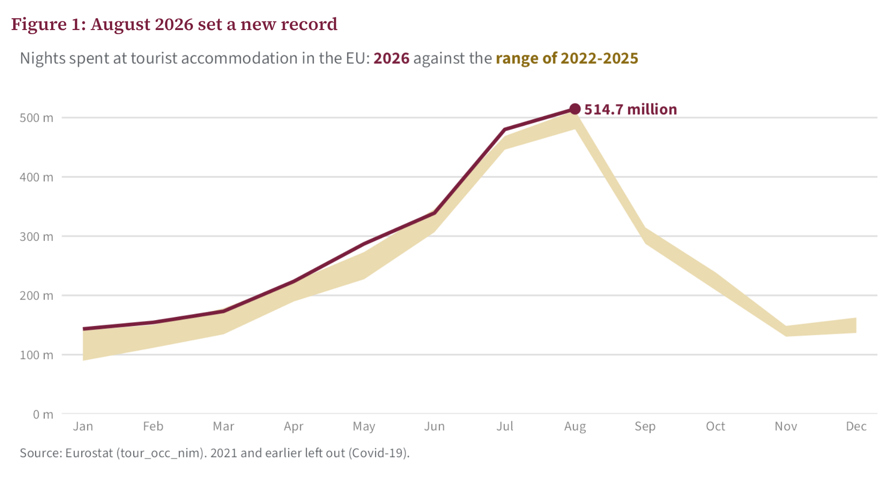
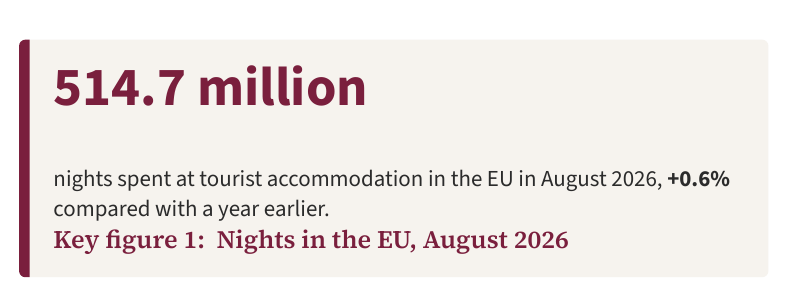

Reproducible Statistical Publications with Quarto

November 19, 2026
Quarto renders text and R code into this bulletin


Quarto renders text and R code into this bulletin
bulletin.html, August 2026
Key figure: 514.7 million nights
Chart and caption: from the same R code
Nobody typed 514.7
For print


Your institute’s look: one _brand.yml for every format
_brand.yml
meta:
name: Northbridge Statistical Office
logo:
images:
mark: brand/nso-mark.svg
color:
primary: "#7a1f3d"
typography:
base: Source Sans 3
headings: Source Serif 4
One render
quarto render bulletin.qmd
bulletin.html

bulletin.pdf
Already published with Quarto
France · Norway · United Kingdom · OECD

Agreste (SSM Agriculture): dataviz catalogue · ssm-agriculture.github.io/site-DataViz

ONS: weekly deaths data explorer (prototype) · onsdigital.github.io/weekly_deaths_data_explorer

NISRA: Childcare Survey 2024 results · nisra-explore.github.io/childcare-survey

Statistics Norway: documentation report with an ISBN · doc.ameld.ssb.no

OECD: Regional Outlook 2023 country profiles · oecd-cfe-eds.github.io/ro2023-country-pages
These slides are Quarto too.